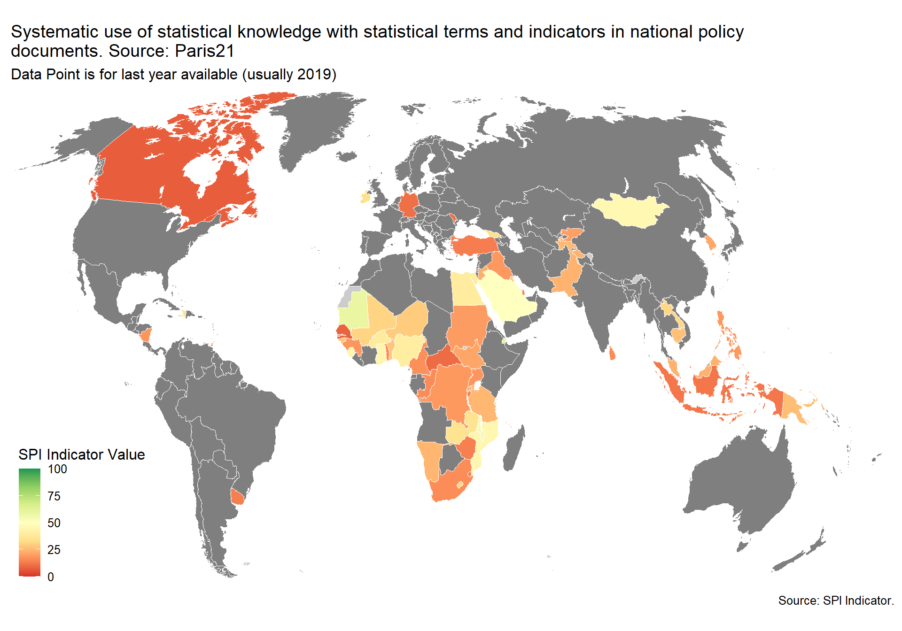

6 Data Infrastructure
Data Infrastructure (5 Indicators):
- 5.1_DILG - Indicator 5.1: legislation and governance
- 5.2_DISM - Indicator 5.2: standards
- 5.3_DISK - Indicator 5.3: skills
- 5.4_DIPN - Indicator 5.4: partnerships
- 5.5_DIFI - Indicator 5.5: finance
6.1 Dimension 5.1: legislation and governance
The legislation and governance indicator will be drawn from SDG indicator 17.18.2 (national statistical legislation compliance with UN Fundamental Principles of Official Statistics), existence of National Statistical Council, national statistical strategy generation, national statistical plan. Also include some other legislative aspects that foster good use of statistics eg freedom of information, privacy/transparency, good governance (eg free and fair elections).
This indicator measures whether the national statistical legislation complies with United Nations Fundamental Principles of Statistics (SDG 17.18.2)
Scores is 1 if the country has a national statistical legislation compliant with United Nations Fundamental Principles of Statistics. Scores of 0 given a score of zero.
The source is Paris 21 and UNSD. Data accessed using UNSD SDG API on 2024-01-16
D5.1_DILG <- read_csv(file=paste(raw_dir, '5.1_DILG', 'SG_STT_FPOS.csv', sep="/")) %>%
select(iso3c, date,ind_value) %>%
right_join(spi_df_empty) %>%
mutate(RAW.D5.1.DILG=if_else((is.na(ind_value) | ind_value=="NaN"),as.numeric(NA), as.numeric(ind_value)),
SPI.D5.1.DILG=if_else((is.na(ind_value) | ind_value=="NaN"),as.numeric(NA), as.numeric(ind_value))) %>%
select(-ind_value, -country)
#
# #read in csv file.
# D5.1_DILG2 <- read_csv(file = paste(raw_dir, "5.1_DILG","5.1_DILG.csv", sep="/" )) %>%
# as_tibble(.name_repair = 'universal') %>%
# transmute(
# country=Country,
# date=Year,
# SPI.5.1.DILG=Data.Value
# ) %>%
# mutate(country=case_when(
# country=="Bahamas" ~ "Bahamas, The",
# country=="Bolivia (Plurinational State of)" ~ "Bolivia" ,
# country=="Côte d'Ivoire" ~ "Cote d'Ivoire" ,
# country=="Democratic Republic of the Congo" ~ "Congo, Dem. Rep." ,
# country=="Congo" ~ "Congo, Rep." ,
# country=="Curacao" ~ "Curacao" ,
# country=="Czechia" ~ "Czech Republic" ,
# country=="Egypt" ~ "Egypt, Arab Rep." ,
# country=="Micronesia (Federated States of)" ~ "Micronesia, Fed. Sts." ,
# country=="United Kingdom" ~ "United Kingdom" ,
# country=="Gambia" ~ "Gambia, The" ,
# country=="Iran (Islamic Republic of)" ~ "Iran, Islamic Rep." ,
# country=="Kyrgyzstan" ~ "Kyrgyz Republic" ,
# country=="Republic of Korea" ~ "Korea, Rep." ,
# country=="Lao People's Democratic Republic" ~ "Lao PDR" ,
# country=="Saint Kitts and Nevis " ~ "St. Kitts and Nevis",
# country=="Saint Lucia" ~ "St. Lucia",
# country=="Republic of Moldova" ~ "Moldova" ,
# country=="Democratic People's Republic of Korea" ~ "Korea, Dem. People’s Rep." ,
# country=="Slovakia" ~ "Slovak Republic" ,
# country=="United Republic of Tanzania" ~ "Tanzania" ,
# country=="United States of America" ~ "United States" ,
# country=="Saint Vincent and the Grenadines" ~ "St. Vincent and the Grenadines" ,
# country=="Venezuela (Bolivarian Republic of)" ~ "Venezuela, RB" ,
# country=="British Virgin Islands" ~ "British Virgin Islands" ,
# country=="Viet Nam" ~ "Vietnam" ,
# country=="Yemen" ~ "Yemen, Rep.",
# country=="United Kingdom of Great Britain and Northern Ireland" ~ "United Kingdom",
# TRUE ~ country
# )) %>%
# mutate(RAW.5.1.DILG=if_else(SPI.5.1.DILG=='no data',as.character(NA), SPI.5.1.DILG),
# SPI.5.1.DILG=if_else(SPI.5.1.DILG=='no data',as.numeric(NA), as.numeric(SPI.5.1.DILG))) %>%
# right_join(spi_df_empty)
#add to spi databases
spi_df <- spi_df %>%
left_join(D5.1_DILG)
D5.1_DILG_map <- D5.1_DILG %>%
filter(!is.na(SPI.D5.1.DILG)) %>%
left_join(country_metadata)
spi_mapper('D5.1_DILG_map', 'RAW.D5.1.DILG', 'National statistical legislation complies with United Nations Fundamental Principles of Statistics. Source: Paris21')


6.2 Dimension 5.2: standards
Average score for Standards and Methods indicators. In this release of the SPI the data and methods used for this indicator are the same as for the previous SPI. Further work could improve the validity of this indicator and reduce the risk that countries may be incentivized to adopt only traditional standards and methods and neglect innovative solutions that may be more valid in the current context.
#pull data for several of the standards from WDI metadata
df <- WDI_metadata
# Manipulate and clean final data
df <- df %>%
filter(!is.na(Income.Group)) #keep just countries (drop aggregations)
#pull IMF country codes for merging
imf_codes <- read_csv(file=paste(raw_dir, "metadata","IMF_country_codes.csv", sep="/" ))6.2.1 5.2.1 System of National Accounts in use
The national accounts data are compiled using the concepts, definitions, framework, and methodology of the System of National Account 2008 (SNA2008) or European System of National and Regional Accounts (ESA 2010). The manual has evolved to meet the changing economic structure, to follow systematic accounting and ensure international compatibility.
Scoring: 1 point for using SNA2008 or ESA 2010, 0.5 points for using SNA 1993 or ESA 1995, 0 points otherwise
#read in metadata file.
D5.2.1.SNAU <- df %>%
mutate(iso3c=if_else(is.na(Country.Code), Code, Country.Code),
country=Table.Name) %>%
select(c('iso3c', 'date', 'System.of.National.Accounts') ) %>%
mutate(SNAU=System.of.National.Accounts) %>%
mutate(SNAU=str_extract(SNAU, "\\d{4}") ) %>%
mutate(SPI.D5.2.1.SNAU=case_when(
SNAU=="2008" ~ 1,
SNAU=="1993" ~ 0.5,
TRUE ~ 0
),
RAW.D5.2.1.SNAU=System.of.National.Accounts) %>%
arrange(date, iso3c) %>%
select(iso3c, date,RAW.D5.2.1.SNAU, SPI.D5.2.1.SNAU ) 6.2.2 5.2.2 National Accounts base year
National accounts base year is the year used as the base period for constant price calculations in the country’s national accounts. It is recommended that the base year of constant price estimates be changed periodically to reflect changes in economic structure and relative prices.
1 point for chained price, 0.5 for reference period within past 10 years, 0 points otherwise.
df %>%
mutate(iso3c=if_else(is.na(Country.Code), Code, Country.Code),
country=Table.Name) %>%
select(c('iso3c', 'date', 'National.accounts.base.year') ) %>%
mutate(NABY=National.accounts.base.year) %>%
mutate(NABY_dates=gsub("\\d{2}/","",NABY) ) %>%
mutate(NABY_dates=str_extract(NABY_dates, "\\d{4}") ) %>%
mutate(NABY_dates=if_else(NABY=="20015/2016","2016",NABY_dates)) %>% #fix an issue in WDI metadata
arrange(iso3c,date) %>%
write_excel_csv(paste(raw_dir, "5.2_DISM","D5.2.2.NABY_raw_metadata.csv", sep="/" ))
D5.2.2.NABY <- read_csv(paste(raw_dir, "5.2_DISM","D5.2.2.NABY_raw_metadata.csv", sep="/" )) %>%
mutate(SPI.D5.2.2.NABY=case_when(
NABY=="Original chained constant price data are rescaled." ~ 1,
(date-as.numeric(NABY_dates))<=10 ~ 0.5, #within 10 years of reference period
TRUE ~ 0
),
RAW.D5.2.2.NABY=NABY) %>%
select(iso3c, date, RAW.D5.2.2.NABY, SPI.D5.2.2.NABY ) %>%
arrange(date)6.2.3 5.2.3 Classification of national industry
The industrial production data are compiled using the International Standard Industrial Classification of All Economic Activities (ISIC) Rev.4 and Statistical Classification of Economic Activities in the European Community (NACE) Rev.2. ISIC Rev.4 is a standard classification of economic activities arranged so that entities can be classified per the activity they carry out using criteria such as input, output and use of the products produced, more emphasis has been given to the character of the production process in defining and delineating ISIC classes for international comparability. The manual and classification have changed to cover the complete scope of industrial production, employment, and GDP and other statistical areas.
1 Point. Latest version is adopted (ISIC Rev 4, NACE Rev 2 or a compatible classification)
0.5 Points. Previous version is used (ISIC Rev 3, NACE Rev 1 or a compatible classification)
0 Points. Otherwise
#read in csv file.
D5.2.3.CNIN <- read_csv(file = paste(raw_dir, "5.2_DISM","D5.2.3.CNIN.2022.csv", sep="/" )) %>% #add in 2020 data
pivot_longer(cols = c(`2020`:`2022`),
names_to='date',
values_to='CNIN') %>%
mutate(
iso3c=Code,
date=as.numeric(date)
) %>%
bind_rows(read_csv(file = paste(raw_dir, "5.2_DISM","D5.2.3.CNIN.csv", sep="/" ))) %>%
mutate(SPI.D5.2.3.CNIN=case_when(
str_to_lower(CNIN)=="nace rev2" | str_to_lower(CNIN)=="rev4" ~ 1,
str_to_lower(CNIN)=="nace rev1" | str_to_lower(CNIN)=="rev3" ~ 0.5,
TRUE ~ 0
),
RAW.D5.2.3.CNIN=CNIN) %>%
select(iso3c, date, RAW.D5.2.3.CNIN, SPI.D5.2.3.CNIN ) %>%
arrange(date, iso3c)6.2.4 5.2.4 CPI base year
Consumer Price Index serves as indicators of inflation and reflects changes in the
cost of acquiring a fixed basket of goods and services by the average consumer.
Weights are usually derived from consumer expenditure surveys and the CPI base year
refers to the year the weights were derived. It is recommended that the base year be
changed periodically to reflect changes in expenditure structure.
1 Point. Annual chain linking. 0.5 Points. Base year in last 10 years. 0 points. Otherwise
#read in csv file.
D5.2.4.CPIBY <- read_csv(file = paste(raw_dir, "5.2_DISM","D5.2.4.CPIBY.csv", sep="/" )) %>%
bind_rows(read_csv(file = paste(raw_dir, "5.2_DISM","D5.2.4.CPIBY.2020.csv", sep="/" ))) %>% # add in 2020 data
mutate(SPI.D5.2.4.CPIBY=case_when(
str_to_lower(CPIBY)=="annual chained" ~ 1,
str_to_lower(CPIBY)=="annually chained" ~ 1,
(date-as.numeric(CPIBY))<=10 ~ 0.5, #within 10 years of reference period
TRUE ~ 0
),
RAW.D5.2.4.CPIBY=CPIBY) %>%
select(iso3c, date, RAW.D5.2.4.CPIBY, SPI.D5.2.4.CPIBY ) %>%
arrange(date, iso3c) %>%
right_join(spi_df_empty)
#####
# IMF Data
#####
#use alternative data source provided by the IMF
#read in data on when the weights were last updated to measure if annual chain linking is done
D5.2.4.COICOP.WGT <- read_excel(path=paste(raw_dir, "5.2_DISM","2022.10_Compiled Data for World Bank.xlsx", sep="/" ),
sheet = "COICOP Month_Last Change",
skip=4
) %>%
as_tibble(.name_repair='universal') %>%
rename(
IMF_code=Code,
IMF_country=Country_revised
) %>%
mutate(IMF_code=as.numeric(IMF_code)) %>%
left_join(imf_codes)
#read in last time the CPI reference period is updated to fill in rest of info
D5.2.4.CPI.REF <- read_excel(path=paste(raw_dir, "5.2_DISM","2022.10_Compiled Data for World Bank.xlsx", sep="/" ),
sheet = "2. CPI Reference Period Review"
) %>%
as_tibble(.name_repair='universal') %>%
rename(IMF_country=Country) %>%
left_join(D5.2.4.COICOP.WGT) #merge CPI weights
#now calculate whether annual chain linking is used and CPI base year from scratch using this info
D5.2.4.CPIBY.IMF.RAW <- D5.2.4.CPI.REF %>%
filter(!is.na(iso3c)) %>%
mutate(CPI_ref_period=str_sub(CPI.reference.period..as.of.october.2022,1,4),
CPI_ref_period=as.numeric(CPI_ref_period),
CPI_weight_change=str_sub(last_change,1,4),
CPI_weight_change=as.numeric(CPI_weight_change),
iso3c=if_else(iso3c=="KOS", 'XKX',iso3c) ) %>% #fix kosovo
mutate(RAW.D5.2.4.CPIBY.IMF=if_else((CPI_weight_change>=2022 & CPI_ref_period<=2022), "annual chained",as.character(CPI_ref_period),as.character(CPI_ref_period))) %>%
mutate(RAW.D5.2.4.CPIBY.IMF=if_else((iso3c=='AUS' | iso3c=='NZL'),"annual chained",as.character(RAW.D5.2.4.CPIBY.IMF),as.character(RAW.D5.2.4.CPIBY.IMF))) #replace Australia and New Zealand as annual chain linking. They use quarterly cpi releases and do not show up in this dataset
#score from 2010 to 2020
if (exists('D5.2.4.CPIBY.IMF')) {
rm(D5.2.4.CPIBY.IMF)
}
for (i in c(2015:2022)) {
temp <- D5.2.4.CPIBY.IMF.RAW %>%
mutate(date=i) %>%
mutate(SPI.D5.2.4.CPIBY.IMF=case_when(
RAW.D5.2.4.CPIBY.IMF=="annual chained" ~ 1,
(date-as.numeric(RAW.D5.2.4.CPIBY.IMF))<=10 ~ 0.5, #within 10 years of reference period
TRUE ~ 0
)) %>%
select(iso3c, date, RAW.D5.2.4.CPIBY.IMF, SPI.D5.2.4.CPIBY.IMF ) %>%
arrange(date, iso3c)
if (!exists('D5.2.4.CPIBY.IMF')) {
D5.2.4.CPIBY.IMF <- temp
} else {
D5.2.4.CPIBY.IMF <- D5.2.4.CPIBY.IMF %>%
bind_rows(temp)
}
}
#update based on IMF data. Use manually collected value when other value not available
D5.2.4.CPIBY <- D5.2.4.CPIBY %>%
full_join(D5.2.4.CPIBY.IMF) %>%
mutate(SPI.D5.2.4.CPIBY=if_else(is.na(SPI.D5.2.4.CPIBY),SPI.D5.2.4.CPIBY.IMF,SPI.D5.2.4.CPIBY)) %>%
select(-SPI.D5.2.4.CPIBY.IMF) 6.2.5 5.2.5 Classification of household consumption
Classification of Individual Consumption According to Purpose (COICOP)
is used in household budget surveys, consumer price indices and international
comparisons of gross domestic product (GDP) and its component expenditures.
Although COICOP is not strictly linked to any particular model of consumer
behavior, the classification is designed to broadly reflect differences in
income elasticities. It is an integral part of the SNA1993 and more detailed
subdivision of the classes provide comparability between countries and between
statistics in these different areas.
1 Point. Follow Classification of Individual Consumption by Purpose (COICOP) 0 Points. Otherwise
#read in csv file.
D5.2.5.HOUS <- read_csv(file = paste(raw_dir, "5.2_DISM","D5.2.5.HOUS.csv", sep="/" )) %>%
bind_rows(read_csv(file = paste(raw_dir, "5.2_DISM","D5.2.5.HOUS.2020.csv", sep="/" ))) %>% #add 2020 data
mutate(SPI.D5.2.5.HOUS=case_when(
HOUS=="COICOP" ~ 1,
TRUE ~ 0
),
RAW.D5.2.5.HOUS=HOUS) %>%
select(iso3c, date, RAW.D5.2.5.HOUS, SPI.D5.2.5.HOUS ) %>%
arrange(date, iso3c) %>%
right_join(spi_df_empty)
#####
# IMF Data
#####
#use alternative data source provided by the IMF
#read in data on COICOP from IMF
D5.2.5.HOUS.IMF <- read_excel(path=paste(raw_dir, "5.2_DISM","2022.10_Compiled Data for World Bank.xlsx", sep="/" ),
sheet = "3. Household Consump Class",
skip=0
) %>%
as_tibble(.name_repair='universal') %>%
rename(
IMF_code=Code,
IMF_country=Country,
) %>%
mutate(SPI.D5.2.5.HOUS.IMF=case_when(
Status..as.of.October.2022=="COICOP" ~ 1,
Status..as.of.October.2022=="COICOP." ~ 1,
Status..as.of.October.2022=="COICOP 2018" ~ 1,
TRUE ~ 0
),
RAW.D5.2.5.HOUS.IMF=Status..as.of.October.2022) %>%
mutate(IMF_code=as.numeric(IMF_code)) %>%
left_join(imf_codes) %>%
mutate(
iso3c=if_else(iso3c=="KOS", 'XKX',iso3c) ) %>% #fix kosovo
select(iso3c, RAW.D5.2.5.HOUS.IMF,SPI.D5.2.5.HOUS.IMF )
D5.2.5.HOUS.IMF <- D5.2.5.HOUS.IMF %>%
bind_rows(D5.2.5.HOUS.IMF %>% mutate(date=2021)) %>%
mutate(date=if_else(!is.na(date),2022,2021))
D5.2.5.HOUS <- D5.2.5.HOUS %>%
full_join(D5.2.5.HOUS.IMF) %>%
mutate(SPI.D5.2.5.HOUS=if_else(is.na(SPI.D5.2.5.HOUS),SPI.D5.2.5.HOUS.IMF,SPI.D5.2.5.HOUS)) %>% #fill in with IMF data if missing. This applies mostly to high income countries
select(-country,-SPI.D5.2.5.HOUS.IMF) %>%
arrange(date, iso3c) 6.2.6 5.2.6 Classification of status of employment
Classification of status of employment refers to employment data that are compiled using the current international standard International Classification of Status in Employment (ISCE-93). It classifies jobs with respect to the type of explicit or implicit contract of employment between the job holder and the economic unit in which he or she is employed. Therefore, it aims to provide the basis for production of internationally comparable statistics on the employment relationship, including the distinction between salaried employment and self-employment.
1 Point. Follow International Labour Organization, International Classification of Status in Employment (ICSE-93) or 2012 North American Industry Classification System (NAICS). 0 Points Otherwise.
#read in csv file.
D5.2.6.EMPL <- read_csv(file = paste(raw_dir, "5.2_DISM","D5.2.6.EMPL.csv", sep="/" )) %>%
bind_rows(read_csv(file = paste(raw_dir, "5.2_DISM","D5.2.6.EMPL.2020.csv", sep="/" ))) %>% # add in 2020 data
mutate(SPI.D5.2.6.EMPL=case_when(
EMPL=="ICSE-93" | EMPL=="NAICS" ~ 1,
TRUE ~ 0
)) %>%
bind_rows(read_csv(file = paste(raw_dir, "5.2_DISM","D5.2.6.EMPL.2022.csv", sep="/" )) %>% mutate(date=2021, SPI.D5.2.6.EMPL=as.numeric(ISCE))) %>% # add in 2022 data
bind_rows(read_csv(file = paste(raw_dir, "5.2_DISM","D5.2.6.EMPL.2022.csv", sep="/" )) %>% mutate(date=2022, SPI.D5.2.6.EMPL=as.numeric(ISCE))) %>% # add in 2022 data
mutate(
RAW.D5.2.6.EMPL=EMPL) %>%
select(iso3c, date, RAW.D5.2.6.EMPL, SPI.D5.2.6.EMPL ) %>%
arrange(date, iso3c)6.2.7 5.2.7 Central government accounting status
Government finance accounting status refers to the accounting basis for
reporting central government financial data. For many countries’ government
finance data, have been consolidated into one set of accounts capturing all
the central government’s fiscal activities and following noncash recording basis.
Budgetary central government accounts do not necessarily include all central government
units, the picture they provide of central government activities is usually incomplete.
1 Point. Consolidated central government accounting follows noncash recording basis
0.5 Points. Consolidated central government accounting follows cash recording basis
0 Points. Otherwise
#read in csv file.
D5.2.7.CGOV <- read_csv(file = paste(raw_dir, "5.2_DISM","D5.2.7.CGOV.csv", sep="/" )) %>%
bind_rows(read_csv(file = paste(raw_dir, "5.2_DISM","D5.2.7.CGOV.2020.csv", sep="/" ))) %>% #add in 2020 data
mutate(SPI.D5.2.7.CGOV=case_when(
CGOV=="AC" ~ 1,
CGOV=="CA" ~ 0.5,
TRUE ~ 0
),
RAW.D5.2.7.CGOV=CGOV) %>%
select(iso3c, date, RAW.D5.2.7.CGOV, SPI.D5.2.7.CGOV ) %>%
arrange(date, iso3c) %>%
right_join(spi_df_empty)
#####
# IMF Data
#####
#use alternative data source provided by the IMF
#read in data from IMF
D5.2.7.CGOV.IMF <- read_excel(path=paste(raw_dir, "5.2_DISM","2022.10_Compiled Data for World Bank.xlsx", sep="/" ),
sheet = "5. Cntrl Gct Acct Status",
skip=9
) %>%
as_tibble(.name_repair='universal') %>%
rename(
IMF_code=Code,
IMF_country=Country,
) %>%
mutate(SPI.D5.2.7.CGOV.IMF=case_when(
General.Government..consolidated.=="AC" ~ 1,
General.Government..consolidated.=="CA" ~ 0.5,
TRUE ~ 0
),
RAW.D5.2.7.CGOV.IMF=General.Government..consolidated.) %>%
mutate(IMF_code=as.numeric(IMF_code)) %>%
left_join(imf_codes) %>%
mutate(
iso3c=if_else(iso3c=="KOS", 'XKX',iso3c) ) %>% #fix kosovo
select(iso3c, RAW.D5.2.7.CGOV.IMF,SPI.D5.2.7.CGOV.IMF ) %>%
mutate(date=2020)
D5.2.7.CGOV <- D5.2.7.CGOV %>%
full_join(D5.2.7.CGOV.IMF) %>%
mutate(SPI.D5.2.7.CGOV=if_else(is.na(SPI.D5.2.7.CGOV),SPI.D5.2.7.CGOV.IMF,SPI.D5.2.7.CGOV)) %>% #fill in with IMF data if missing. This applies mostly to high income countries
select(-country,-SPI.D5.2.7.CGOV.IMF) %>%
arrange(date, iso3c) %>%
filter(!is.na(SPI.D5.2.7.CGOV))6.2.8 5.2.8 Compilation of government finance statistics
(GFSM) in use for compiling the data. It provides guidelines on the institutional structure of governments and the presentation of fiscal data in a format similar to business accounting with a balance sheet and income statement plus guidelines on the treatment of exchange rate and other valuation adjustments. The latest manual GFSM2014 is harmonized with the SNA2008.
1 Point. Follow the latest Government Finance Statistical Manual (2014)/ ESA2010
0.5 Points. Previous version is used (GFSM 2001)
0 Points. Otherwise
#read in csv file.
D5.2.8.FINA <- read_csv(file = paste(raw_dir, "5.2_DISM","D5.2.8.FINA.csv", sep="/" )) %>%
bind_rows(read_csv(file = paste(raw_dir, "5.2_DISM","D5.2.8.FINA.2020.csv", sep="/" )) ) %>% #add in 2020 data
bind_rows(read_csv(file = paste(raw_dir, "5.2_DISM","D5.2.8.FINA.2022.csv", sep="/" )) %>% mutate(date=2021, iso3c=Code)) %>% #add in 2020 data
bind_rows(read_csv(file = paste(raw_dir, "5.2_DISM","D5.2.8.FINA.2022.csv", sep="/" )) %>% mutate(date=2022, iso3c=Code)) %>% #add in 2020 data
mutate(SPI.D5.2.8.FINA=case_when(
FINA=="2014" | FINA=="ESA 2010"~ 1,
FINA=="2001" ~ 0.5,
TRUE ~ 0
),
RAW.D5.2.8.FINA=FINA) %>%
select(iso3c, date, RAW.D5.2.8.FINA, SPI.D5.2.8.FINA ) %>%
arrange(date, iso3c)6.2.9 5.2.9 Compilation of monetary and financial statistics
Compilation of monetary and financial statistics refers to the Monetary and Financial Statistics Manual (MFSM) in use. It covers concepts, definitions, classifications of financial instruments and sectors, and accounting rules, and provides a comprehensive analytic framework for monetary and financial planning and policy determination. The Monetary and Finance Statistics: Compilation Guide (2008) provides detailed guidelines for the compilation of monetary and financial statistics in addition to MFSM.
1 Point. Follow the latest Monetary and Finance Statistics Manual (2000) or Monetary and Finance Statistics: Compilation Guide (2008/2016) 0 Points. Otherwise
#read in csv file.
D5.2.9.MONY <- read_csv(file = paste(raw_dir, "5.2_DISM","D5.2.9.MONY.csv", sep="/" )) %>%
bind_rows(read_csv(file = paste(raw_dir, "5.2_DISM","D5.2.9.MONY.2020.csv", sep="/" ))) %>% #add in 2020 data
mutate(SPI.D5.2.9.MONY=case_when(
MONY=="MFSM 2000" | MONY=="MFSMCG 2016"~ 1,
TRUE ~ 0
),
RAW.D5.2.9.MONY=MONY) %>%
select(iso3c, date, RAW.D5.2.9.MONY, SPI.D5.2.9.MONY ) %>%
arrange(date, iso3c) %>%
right_join(spi_df_empty)
#####
# IMF Data
#####
#use alternative data source provided by the IMF
#read in data from IMF
D5.2.9.MONY.IMF <- read_excel(path=paste(raw_dir, "5.2_DISM","2020.11.04_Compiled Data for World Bank.xlsx", sep="/" ),
sheet ="7. MFS Compilation status",
skip=0
) %>%
as_tibble(.name_repair='universal') %>%
rename(
IMF_code=Code,
IMF_country=Country,
) %>%
mutate(SPI.D5.2.9.MONY.IMF=case_when(
grepl('MFSM 2000',Monetary.and.Financial.Statistics..MFS..Reporting.Status) ~ 1,
TRUE ~ 0
),
RAW.D5.2.9.MONY.IMF=Monetary.and.Financial.Statistics..MFS..Reporting.Status) %>%
mutate(IMF_code=as.numeric(IMF_code)) %>%
left_join(imf_codes) %>%
select(iso3c, RAW.D5.2.9.MONY.IMF,SPI.D5.2.9.MONY.IMF ) %>%
mutate(date=2020)
#read in data from IMF
D5.2.9.MONY.IMF.UPD <- read_excel(path=paste(raw_dir, "5.2_DISM","2022.10_Compiled Data for World Bank.xlsx", sep="/" ),
sheet ="7. MFS Compilation status",
skip=0
) %>%
as_tibble(.name_repair='universal') %>%
rename(
IMF_code=Code,
IMF_country=Country,
) %>%
mutate(SPI.D5.2.9.MONY.IMF=case_when(
grepl('MFSM 2000',Monetary.and.Financial.Statistics..MFS..Reporting.Status..as.of.October.2022) ~ 1,
TRUE ~ 0
),
RAW.D5.2.9.MONY.IMF=Monetary.and.Financial.Statistics..MFS..Reporting.Status..as.of.October.2022) %>%
mutate(IMF_code=as.numeric(IMF_code)) %>%
left_join(imf_codes) %>%
select(iso3c, RAW.D5.2.9.MONY.IMF,SPI.D5.2.9.MONY.IMF )
D5.2.9.MONY.IMF <- D5.2.9.MONY.IMF %>%
bind_rows(D5.2.9.MONY.IMF.UPD %>% mutate(date=2021)) %>%
bind_rows(D5.2.9.MONY.IMF.UPD %>% mutate(date=2022))
D5.2.9.MONY <- D5.2.9.MONY %>%
full_join(D5.2.9.MONY.IMF) %>%
mutate(SPI.D5.2.9.MONY=if_else(is.na(SPI.D5.2.9.MONY),SPI.D5.2.9.MONY.IMF,SPI.D5.2.9.MONY,0)) %>% #fill in with IMF data if missing. This applies mostly to high income countries
select(-SPI.D5.2.9.MONY.IMF) %>%
arrange(date, iso3c)6.2.10 5.2.10 Business process
The Generic Statistical Business Process Model (GSBPM) aims to describe statistics production in a general and process-oriented way. It is used both within and between statistical offices as a common basis for work with statistics production in different ways, such as quality, efficiency, standardization, and process-orientation. It is used for all types of surveys, and “business” is not related to “business statistics” but refers to the statistical office, simply expressed.
1 Point. GSBPM is in use 0 Points. Otherwise
#read in csv file.
D5.2.10.GSBP <- read_csv(file = paste(raw_dir, "5.2_DISM","D5.2.10.GSBP.csv", sep="/" )) %>%
bind_rows(read_csv(file = paste(raw_dir, "5.2_DISM","D5.2.10.GSBP.2020.csv", sep="/" ))) %>% #add in 2020 data
bind_rows(read_csv(file = paste(raw_dir, "5.2_DISM","D5.2.10.GSBP.2021.csv", sep="/" )) %>% mutate(date=2021)) %>% #add in 2021 data
bind_rows(read_csv(file = paste(raw_dir, "5.2_DISM","D5.2.10.GSBP.2022.csv", sep="/" ))%>% mutate(date=2022)) %>% #add in 2022 data
mutate(SPI.D5.2.10.GSBP=case_when(
str_to_lower(GSBP)=="yes" ~ 1,
TRUE ~ 0
),
RAW.D5.2.10.GSBP=GSBP) %>%
select(iso3c, date, RAW.D5.2.10.GSBP, SPI.D5.2.10.GSBP ) %>%
arrange(date, iso3c)


6.3 Dimension 5.3: skills
This indicator assesses the systematic use of statistical knowledge with statistical terms and indicators in national policy documents. It is a composite indicator consisting of 4 sub-indices that aim to reflect the relevance of statistical evidence. It comprises four main dimensions: i) Basic consideration; ii) Diagnosis and quantification; iii) Statistical Analysis; iv) Disaggregation.
Score ranges from 0 to 100. The score is the weighted sum of each of the four components’ scores, whose relative weight is reported in brackets: i) Basic Consideration (25%); ii) Diagnosis and quantification (24%); iii) Statistical Analysis (22%); iv) Disaggregation (29%).
The source is Paris 21. Data accessed on August 6, 2020 from https://statisticalcapacitymonitor.org/indicator/127
Not included because of lack of established methodology or suitable data sources.
#read in csv file.
D5.3_DISK <- read_csv(file = paste(raw_dir, "5.3_DISK","5.3_DISK.csv", sep="/" )) %>%
as_tibble(.name_repair = 'universal') %>%
distinct(Indicator, Country, Year,.keep_all=TRUE) %>%
transmute(
country=Country,
date=Year,
SPI.D5.3.DISK=Data.Value
) %>%
mutate(country=case_when(
country=="Bahamas" ~ "Bahamas, The",
country=="Bolivia (Plurinational State of)" ~ "Bolivia" ,
country=="Côte d'Ivoire" ~ "Cote d'Ivoire" ,
country=="Democratic Republic of the Congo" ~ "Congo, Dem. Rep." ,
country=="Congo" ~ "Congo, Rep." ,
country=="Curacao" ~ "Curacao" ,
country=="Czechia" ~ "Czech Republic" ,
country=="Egypt" ~ "Egypt, Arab Rep." ,
country=="Micronesia (Federated States of)" ~ "Micronesia, Fed. Sts." ,
country=="United Kingdom" ~ "United Kingdom" ,
country=="Gambia" ~ "Gambia, The" ,
country=="Iran (Islamic Republic of)" ~ "Iran, Islamic Rep." ,
country=="Kyrgyzstan" ~ "Kyrgyz Republic" ,
country=="Republic of Korea" ~ "Korea, Rep." ,
country=="Lao People's Democratic Republic" ~ "Lao PDR" ,
country=="Saint Kitts and Nevis " ~ "St. Kitts and Nevis",
country=="Saint Lucia" ~ "St. Lucia",
country=="Republic of Moldova" ~ "Moldova" ,
country=="Democratic People's Republic of Korea" ~ "Korea, Dem. People’s Rep." ,
country=="Slovakia" ~ "Slovak Republic" ,
country=="United Republic of Tanzania" ~ "Tanzania" ,
country=="United States of America" ~ "United States" ,
country=="Saint Vincent and the Grenadines" ~ "St. Vincent and the Grenadines" ,
country=="Venezuela (Bolivarian Republic of)" ~ "Venezuela, RB" ,
country=="British Virgin Islands" ~ "British Virgin Islands" ,
country=="Viet Nam" ~ "Vietnam" ,
country=="Yemen" ~ "Yemen, Rep.",
country=="United Kingdom of Great Britain and Northern Ireland" ~ "United Kingdom",
TRUE ~ country
)) %>%
mutate(RAW.D5.3.DISK=if_else(SPI.D5.3.DISK=='no data',as.character(NA), SPI.D5.3.DISK),
SPI.D5.3.DISK=if_else(SPI.D5.3.DISK=='no data',as.numeric(NA), as.numeric(SPI.D5.3.DISK))/100) %>%
right_join(spi_df_empty)
#add to spi databases
spi_df <- spi_df %>%
left_join(D5.3_DISK)
D5.3_DISK_map <- D5.3_DISK %>%
filter(!is.na(SPI.D5.3.DISK))
spi_mapper('D5.3_DISK_map', 'SPI.D5.3.DISK', 'Systematic use of statistical knowledge with statistical terms and indicators in national policy documents. Source: Paris21')


6.4 Dimension 5.4: partnerships
Not included because of lack of established methodology or suitable data sources.
6.5 Dimension 5.5: finance
Indicator based on SDG indicators (SDG 17.18.3 (national statistical plan that is fully funded and under implementation). This indicator measures whether the national statistical plan under implementation is fully funded. It relates to SDG 17.18.3 and is based on the annual Status Report on National Strategies for the Development of Statistics (NSDS).
Scores is 1 if the country has a national statistical plan that is fully funded and under implementation. Scores of 0 given a score of zero.
The source is Paris 21 and UNSD. Data accessed using UNSD SDG API on 2024-01-16
Source of this data is UNSD and Paris21.
#pull from unsd api
D5.5_DIFI <- read_csv(file=paste(raw_dir, '5.1_DILG', 'SG_STT_FPOS.csv', sep="/")) %>%
select(iso3c, date,ind_value) %>%
right_join(spi_df_empty) %>%
mutate(RAW.D5.5.DIFI=if_else((is.na(ind_value) | ind_value=="NaN"),as.numeric(NA), as.numeric(ind_value)),
SPI.D5.5.DIFI=if_else((is.na(ind_value) | ind_value=="NaN"),as.numeric(NA), as.numeric(ind_value))) %>%
select(-ind_value)
# #read in csv file.
# D5.5_DIFI <- read_csv(file = paste(raw_dir, "5.5_DIFI","D5.5_DIFI.csv", sep="/" )) %>%
# as_tibble(.name_repair = 'universal') %>%
# transmute(
# country=Country,
# date=Year,
# SPI.5.5.DIFI=Data.Value
# ) %>%
# mutate(country=case_when(
# country=="Bahamas" ~ "Bahamas, The",
# country=="Bolivia (Plurinational State of)" ~ "Bolivia" ,
# country=="Côte d'Ivoire" ~ "Cote d'Ivoire" ,
# country=="Democratic Republic of the Congo" ~ "Congo, Dem. Rep." ,
# country=="Congo" ~ "Congo, Rep." ,
# country=="Curacao" ~ "Curacao" ,
# country=="Czechia" ~ "Czech Republic" ,
# country=="Egypt" ~ "Egypt, Arab Rep." ,
# country=="Micronesia (Federated States of)" ~ "Micronesia, Fed. Sts." ,
# country=="United Kingdom" ~ "United Kingdom" ,
# country=="Gambia" ~ "Gambia, The" ,
# country=="Iran (Islamic Republic of)" ~ "Iran, Islamic Rep." ,
# country=="Kyrgyzstan" ~ "Kyrgyz Republic" ,
# country=="Republic of Korea" ~ "Korea, Rep." ,
# country=="Lao People's Democratic Republic" ~ "Lao PDR" ,
# country=="Saint Kitts and Nevis " ~ "St. Kitts and Nevis",
# country=="Saint Lucia" ~ "St. Lucia",
# country=="Republic of Moldova" ~ "Moldova" ,
# country=="Democratic People's Republic of Korea" ~ "Korea, Dem. People’s Rep." ,
# country=="Slovakia" ~ "Slovak Republic" ,
# country=="United Republic of Tanzania" ~ "Tanzania" ,
# country=="United States of America" ~ "United States" ,
# country=="Saint Vincent and the Grenadines" ~ "St. Vincent and the Grenadines" ,
# country=="Venezuela (Bolivarian Republic of)" ~ "Venezuela, RB" ,
# country=="British Virgin Islands" ~ "British Virgin Islands" ,
# country=="Viet Nam" ~ "Vietnam" ,
# country=="Yemen" ~ "Yemen, Rep.",
# country=="United Kingdom of Great Britain and Northern Ireland" ~ "United Kingdom",
# TRUE ~ country
# )) %>%
# mutate(RAW.5.5.DIFI=if_else(SPI.5.5.DIFI=='no data',as.character(NA), SPI.5.5.DIFI),
# SPI.5.5.DIFI=if_else(SPI.5.5.DIFI=='no data',as.numeric(NA), as.numeric(SPI.5.5.DIFI))) %>%
# right_join(spi_df_empty)
#add to spi databases
spi_df <- spi_df %>%
left_join(D5.5_DIFI)
D5.5_DIFI_map <- D5.5_DIFI %>%
filter(!is.na(SPI.D5.5.DIFI))
spi_mapper('D5.5_DIFI_map', 'RAW.D5.5.DIFI', 'Statistical plan fully funded. Source: Paris21')


#add in population
pop_df <- wbstats::wb(country="all",
indicator='SP.POP.TOTL',
startdate=2004,
enddate=end_date) %>%
mutate(date=as.numeric(date)) %>%
mutate(population=value) %>%
select(iso3c, date, population)
# create final dataset
spi_df_final <- spi_df %>%
dplyr::select(iso3c, date, starts_with("SPI"), starts_with("RAW")) %>%
right_join(spi_df_empty) %>%
left_join(pop_df) %>%
arrange(-date,iso3c)
####
#lining up data to end_date and filling in some values for OECD countries.
####
#get a list of oecd countries
oecd_country_query <- GET(url = "https://api.worldbank.org/v2/country?region=OED&format=json") %>%
content( as = "text", encoding = "UTF-8") %>%
jsonlite::fromJSON( flatten = TRUE)
#do some conversion to produce a dataframe
oecd_country_df <- oecd_country_query[[2]] %>%
as_tibble()
country_mod_list <- oecd_country_df$name #fill in the missing values for OECDs with 1s because by participating in OECD these countries have this
country_mod_list <- c(country_mod_list, 'Singapore')
spi_df_final <- spi_df_final %>%
arrange(country, date) %>%
group_by(iso3c) %>%
mutate(across(starts_with("SPI"), na.locf, na.rm=FALSE)) %>%
mutate(across(c("SPI.D1.5.POV",
"SPI.D2.1.GDDS",
"SPI.D5.1.DILG",
"SPI.D5.2.3.CNIN", "SPI.D5.2.5.HOUS", "SPI.D5.2.6.EMPL", "SPI.D5.2.8.FINA",
"SPI.D5.2.10.GSBP",
"SPI.D5.5.DIFI"),
~if_else(( (income_level=='High income') & (country %in% country_mod_list)),1,.) )) #write to csv
spi_df_final %>%
distinct() %>%
mutate(across(is.list, as.character)) %>%
write_excel_csv( path = paste(output_dir, 'SPI_data.csv', sep="/"))
#label data
#read in metadata
names_df <- data.frame('source_id'=colnames(spi_df_final))
spi_meta <- read_csv(paste(raw_dir, '/metadata/SPI_dimensions_sources.csv', sep="")) %>%
right_join(names_df) %>%
mutate(source_name=if_else(is.na(source_name), paste(source_id), source_name)) %>%
arrange(factor(source_id, levels=colnames(spi_df_final)))
#label data
label(spi_df_final) = as.list(spi_meta$source_name)
#write to stata
spi_df_final %>%
mutate(across(is.list, as.character)) %>%
rename_with(~gsub(".","_",.x, fixed=TRUE)) %>%
select(-latitude,-longitude) %>%
write_dta( path = paste(output_dir, 'SPI_data.dta', sep="/"))